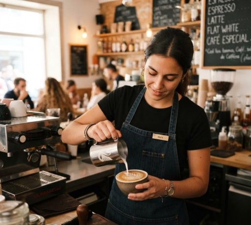
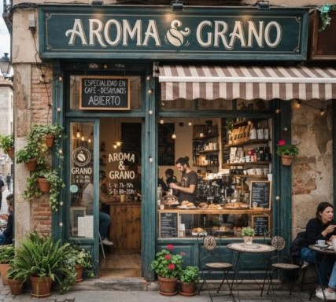
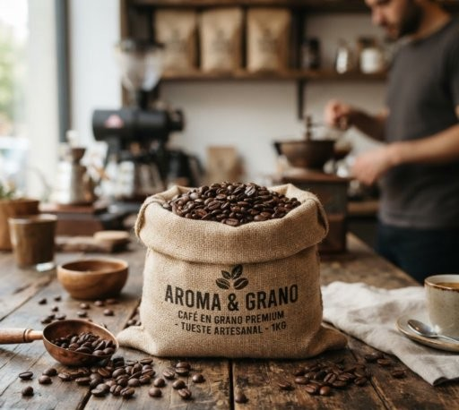

El arte de disfrutar un buen café
Granos seleccionados de los mejores orígenes, tostados a la perfección para ofrecerte una experiencia única.
Explorar Menú
Café de Origen
Granos 100% arábica cosechados bajo procesos de comercio justo.

Repostería Artesanal
Postres y pan recién horneado todos los días para acompañar tu bebida.

Espacio Cómodo
Ambiente tranquilo con Wi-Fi de alta velocidad, ideal para trabajar o estudiar.
Nuestra Historia
En Aroma & Grano combinamos la pasión por el café de especialidad peruano con un ambiente acogedor en el corazón de Pueblo Libre. Trabajamos de la mano con pequeños caficultores de Cusco, Cajamarca y Junín, asegurando granos seleccionados con tostado artesanal para brindarte una experiencia única en cada visita.
Galería


